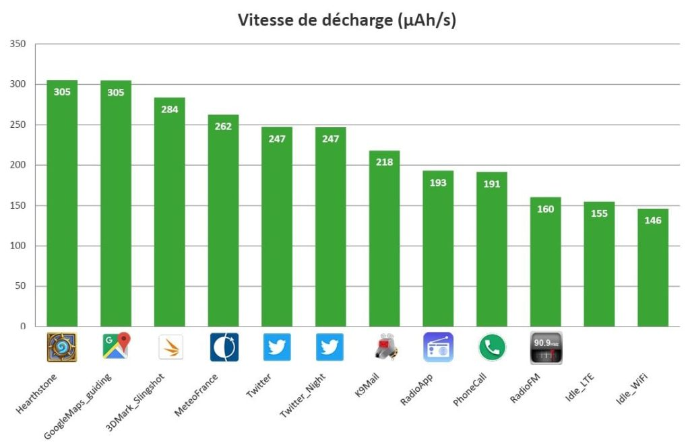
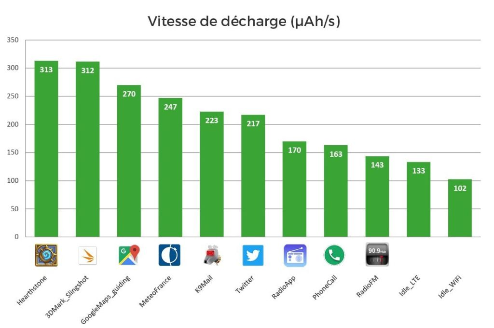

À l’heure où l’on parle beaucoup d’Android 8 Oreo, la plupart des utilisateurs de smartphones utilisent encore des versions antérieures. Parmi ceux-ci, des utilisateurs d’Android 5 qui se demandent peut-être s’il est utile de passer à Android 6. En effet, il paraît qu’Android 6 réduit la consommation de batterie. Mais qu’en est-il vraiment ? C’est ce que j’ai voulu vérifier.
N’installez une mise à jour que si vous en avez vraiment besoin
Aujourd’hui nous sommes accros à nos smartphones et je ne fais pas exception. J’utilise mon Fairphone2 depuis maintenant plus d’un an et je dois dire que j’en suis plutôt satisfait. Mis à part les quelques crashes occasionnels (mais pas plus ou moins nombreux que ceux de mon smartphone précédent), il est devenu mon fidèle compagnon du quotidien.
Quand je l’ai eu, il fonctionnait avec Android 5.1 (Lollipop). L’équipe Fairphone propose des mises à jour très régulières, et quelques mois plus tard la version 6 (Marshmallow) était disponible en téléchargement.
Mais bon… je travaille dans l’informatique depuis quelques années déjà, et je l’utilise depuis encore plus longtemps (la preuve : mon premier ordinateur disait « Ready. » sur fond bleu). Et avec le temps j’ai développé une habitude assez saine : ne jamais installer une mise à jour avant de vérifier que j’en ai vraiment besoin.
Qu’en est-il de l’affirmation sur la consommation de batterie ?
Une partie de cette habitude provient de l’approche de bon sens « if it ain’t broke, don’t fix it » (comprendre : « si ce n’est pas cassé, ne le répare pas »). Ok, cette mise à jour apporte des fonctionnalités sympas et peut être même que j’aurai besoin de certaines d’entre elles. Mais à quel prix ? Est-ce que la mise à jour augmentera l’empreinte du logiciel (mémoire ? espace disque ? besoin en CPU ? qu’en sera-t-il de la consommation de batterie ?…).
J’avais déjà jeté un œil aux nouveautés incluses dans Android 6 et m’étais dit qu’aucune n’était assez intéressante pour que je saute le pas de la mise à jour. Mais une affirmation m’a intrigué : Android 6 est supposé diminuer la consommation de batterie de l’OS et donc permettre une meilleure autonomie.
Avant de faire la mise à jour, j’ai décidé de vérifier la véracité de cette affirmation.
Regardons cela de plus près
C’est là où le fait de travailler pour une entreprise spécialisée en mesure de consommation de batterie sur appareils mobiles est plutôt pratique. Les gars du bureau d’à côté ont spontanément accepté de développer une sonde d’énergie pour le Fairphone2, après que je les ai menacés de rejoindre la chorale de l’entreprise. Ils m’ont même laissé jouer avec une version brute mais très simple d’une application de monitoring de batterie. (Avant qu’on me pose la question : non, cette appli n’est pas disponible à la vente, c’est seulement un truc de lab en interne. Pour le moment.)
Pendant quelques jours j’ai pu analyser la consommation de batterie de mon Fairphone2 lorsque je passais des appels, quand j’utilisais mes applis du quotidien, mais aussi certaines applis juste pour l’expérimentation: K9-Mail, Twitter, Météo France… plus quelques parties de Hearthstone (“ work hard, play hard ”, qu’ils disaient) et enfin j’ai écouté la radio via l’antenne et l’appli FM, et aussi via un appli radio internet choisie au hasard sur le store.
J’ai commencé par les mesures sur Android 5.1. Puis ai mis à jour l’OS, passant donc sur Android 6, et j’ai conduit une seconde série de mesures. Attention, il est important de noter que les applications n’ont pas été mises à jour, seulement l’OS.
Ces mesures m’ont conduit à des résultats intéressants. J’ai donc pu vérifier si Marshmallow abaissait réellement la consommation de batterie ou non ; j’ai aussi pu obtenir des informations sur le comportement individuel des applications.
Classement de mes applis du quotidien
La première série de mesures faites sous Android 5.1 a conduit aux résultats ci-dessous.
Toutes les valeurs sont données en µAh/s, ce sont des « microAmpère heure par seconde ». Le Fairphone2 ayant une capacité de batterie de 2 400 mAh, cela signifie qu’une appli avec un taux de décharge de 300 µah/s videra la batterie en un peu plus de deux heures environ.
• La vitesse de décharge pour mon cas d’usage varie entre 146 et 305 µah/s
• Quelques valeurs à noter :
- Hearthstone : 305
- Twitter : 247
- Appel téléphonique : 191
- Radio (FM intégrée): 160
- Idle (ne rien faire mais sans être en veille, l’écran est allumé): environ 150
La liste complète de cas de tests est comme ci-dessous, sur le graphique :

Résultats anecdotiques : Twitter et la radio FM
En regardant ces valeurs, on trouve quelques informations inattendues :
• Twitter en mode Nuit ne consomme pas moins d’énergie que Twitter avec l’arrière-plan blanc des paramètres par défaut. OK, c’est cohérent avec la technologie de l’écran du Fairphone2 – plus d’informations ici.
• Ecouter la radio via la FM intégrée consomme 20% moins de batterie que l’appli Radio internet choisie au hasard. Evidemment on n’a accès qu’aux stations FM locales, mais selon votre besoin, il peut donc être plus intéressant de passer par la FM intégrée.
Est-ce qu’Android 6 améliore l’autonomie de mon téléphone ?
Eh bien, il est temps de répondre à la question. Mettons à jour le téléphone et lançons les mesures à nouveau. Voici ce que nous obtenons cette fois :
• La vitesse de décharge moyenne varie entre 102 et 313 µah/s
• Quelques valeurs à noter :
- Hearthstone : 313
- Twitter : 208
- Appel téléphonique : 163
- Radio (FM intégrée) : 143
- Idle : entre 102 et 134 suivant la connectivité

En jetant un œil aux autres métriques, il semble que le processeur soit mieux maîtrisé. On se retrouve avec 9 % moins de CPU utilisé par le système quand le téléphone est en idle. Les applis requérant le plus de CPU présentent aussi de meilleures performances. J’obtiens un score de test à 1 058 sur 3DMark Slingshot avec Android 6 (contre 912 avec Android 5.1), mais cela se paie par une augmentation de la consommation énergétique : +10 % de taux de décharge pour 3DMark.
Conclusion
Dans la plupart des cas, Android 6 amène un gain en énergie important : entre 5% et 15% par rapport à Android 5.1. Cependant, attention avec les applications qui demandent beaucoup de CPU : les performances seront améliorées, mais au détriment de la consommation de batterie.
Pour conclure, vais-je garder la version Marshmallow sur mon mobile ? Oui.